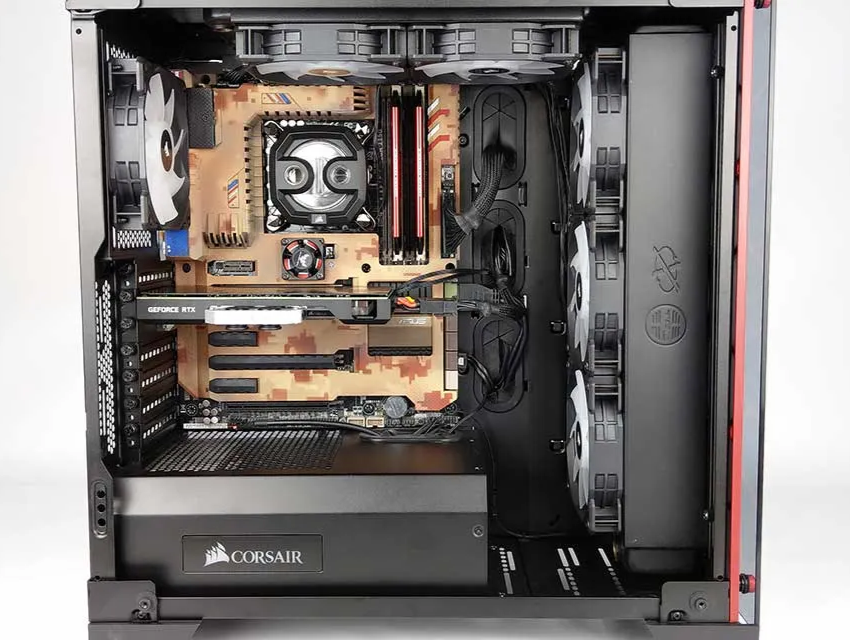
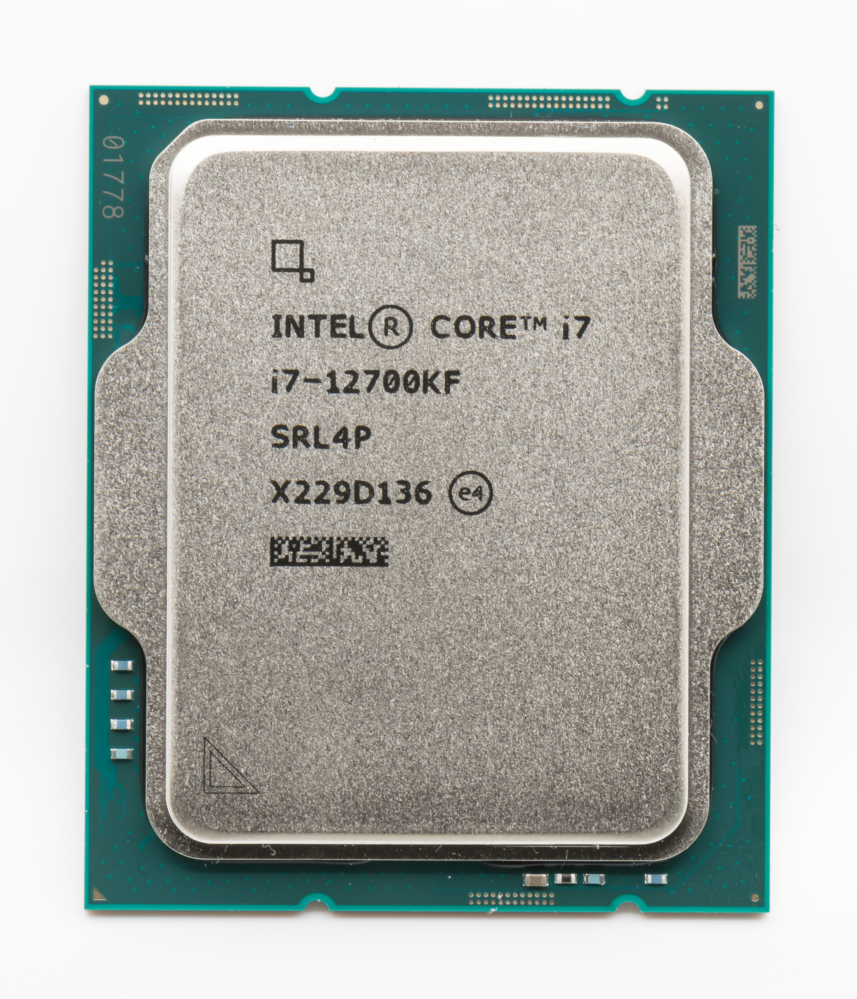
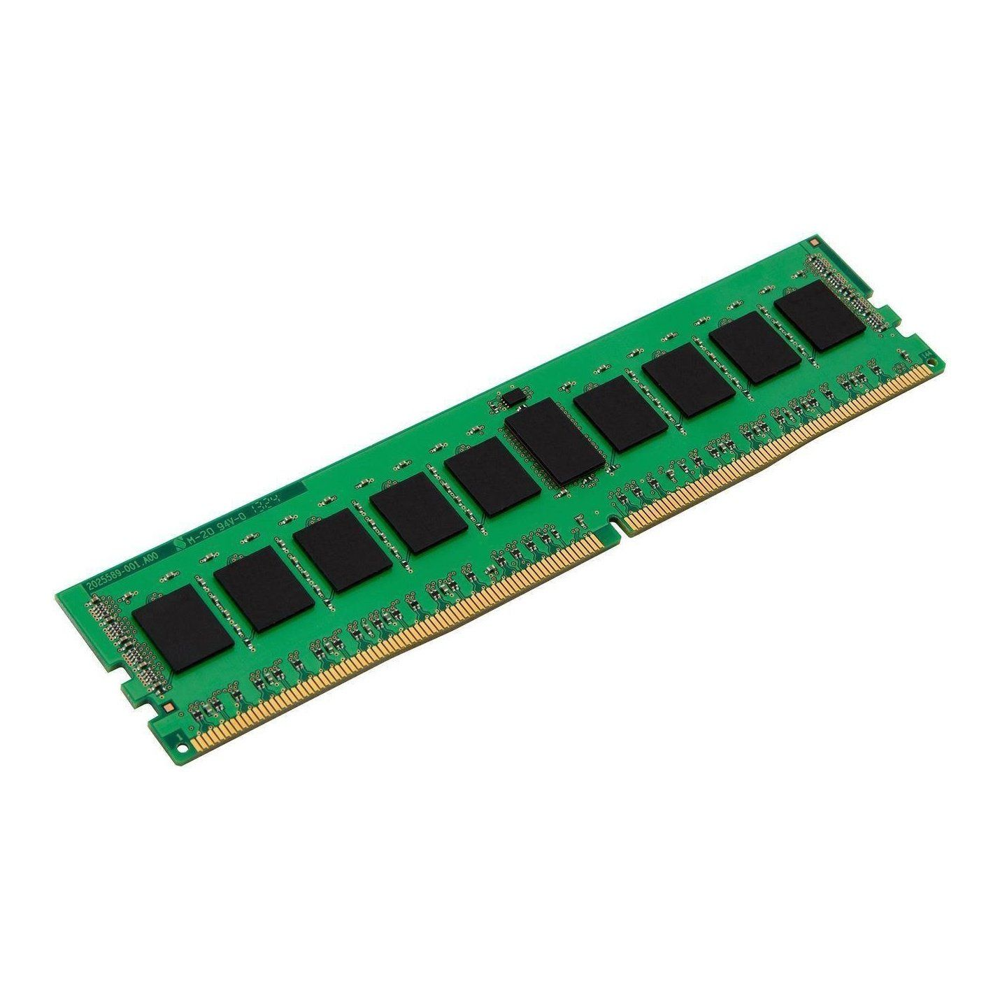
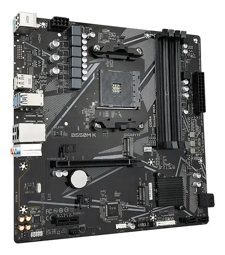
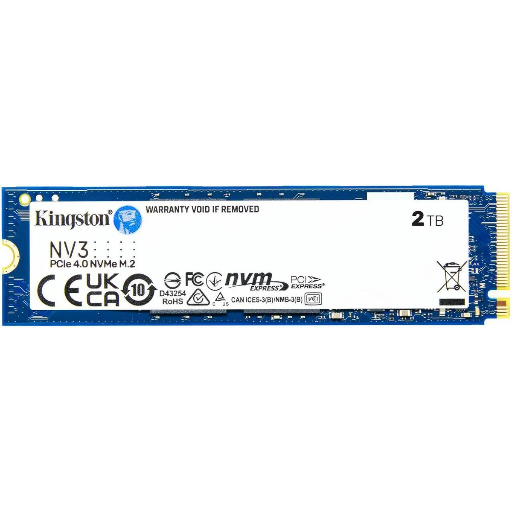

¿Qué es un componente de hardware?
Un componente es una pieza física del computador que realiza una función específica. Algunos procesan información, otros la almacenan de forma temporal o permanente, y otros permiten la comunicación entre el resto de partes del sistema.
En conjunto, estos componentes forman la máquina sobre la cual trabaja el sistema operativo. El SO no reemplaza al hardware: lo organiza, lo protege y ofrece una interfaz para que las aplicaciones lo utilicen de manera ordenada.

¿Por qué importa esto en sistemas operativos?
Conceptos como procesos, memoria virtual, drivers o sistemas de archivos solo tienen sentido si se entiende qué recurso físico se está administrando. Por ejemplo:
- La CPU ejecuta instrucciones; el SO decide qué proceso la usa en cada momento.
- La RAM guarda datos en ejecución; el SO asigna y libera memoria para cada programa.
- El almacenamiento conserva archivos; el SO organiza directorios, permisos y acceso a disco.
- La GPU procesa gráficos; el SO y los controladores median el acceso a ese recurso.
- La placa base conecta todo; sin esa comunicación, el SO no podría coordinar el sistema.
Unidades de medida que conviene conocer
En fichas técnicas y en el Administrador de tareas aparecen siempre las mismas unidades. Sirven para comparar componentes y para entender qué está midiendo el sistema operativo.
| Unidad | Mide | Dónde se ve |
|---|---|---|
| Hz, MHz, GHz | Frecuencia o “reloj”. | CPU, GPU, bus de memoria. |
| KB, MB, GB, TB | Capacidad de almacenamiento o memoria. | RAM, VRAM, disco, caché. |
| MT/s | Millones de transferencias por segundo. | Velocidad efectiva de la RAM. |
| MB/s, GB/s | Tasa de transferencia de datos. | Disco, red, ancho de banda de memoria. |
| IOPS | Operaciones de entrada/salida por segundo. | Rendimiento de SSD en muchas peticiones pequeñas. |
| W (vatios) | Consumo o disipación térmica (TDP). | CPU, GPU, fuente de poder. |
| ms, ns | Latencia o tiempo de respuesta. | Memoria, disco, red. |
Componentes principales
A continuación, cada pieza con su función, unidades, datos clave y qué revisar si vas a comprar un reemplazo o una mejora.
CPU (Unidad Central de Procesamiento)
Es el “cerebro” del computador. Ejecuta las instrucciones de los programas, realiza cálculos y coordina gran parte del trabajo del sistema. Puede tener varios núcleos e hilos para atender varias tareas; el sistema operativo reparte esos turnos entre procesos.
- Unidades: frecuencia en GHz; cantidad de núcleos e hilos; caché en MB; consumo térmico en W (TDP).
- Datos clave: un núcleo ejecuta trabajo propio; un hilo es una vía lógica para aprovechar mejor ese núcleo. Más GHz ayuda en tareas de un solo hilo; más núcleos ayudan cuando hay muchos procesos a la vez.
- Al comprar: el socket debe coincidir con la placa base; mira generación y chipset compatibles; revisa si necesitas buen rendimiento en un hilo (ofimática, algunos juegos) o en muchos (edición, virtualización); confirma que el disipador y la fuente aguanten el TDP.

RAM (Memoria de acceso aleatorio)
Es la memoria de trabajo donde se cargan el sistema operativo, los programas abiertos y los datos activos. Es volátil: al apagar el equipo, su contenido se pierde. Más RAM suele permitir más aplicaciones simultáneas; el SO administra cuánta memoria recibe cada proceso.
- Unidades: capacidad en GB; velocidad en MT/s (o MHz en fichas antiguas); latencia CAS (CL); canales (simple, dual…).
- Tasa de transferencia: indica qué tan rápido pueden moverse datos entre la RAM y el resto del sistema. En DDR4/DDR5 se expresa sobre todo en MT/s. A más transferencias por segundo, mayor ancho de banda potencial (en GB/s), siempre que CPU y placa lo soporten.
- Datos clave: la capacidad evita que el SO recurra demasiado al disco (memoria virtual lenta). La velocidad y la latencia influyen en la respuesta, pero primero importa tener GB suficientes y módulos en dual channel si la placa lo permite.
- Al comprar: el tipo (DDR4 o DDR5) debe ser el de la placa; no mezcles tipos. Revisa la velocidad máxima oficialmente soportada por CPU/placa; prioriza dos módulos iguales (por ejemplo 2×8 GB) frente a uno solo; confirma el formato (DIMM de escritorio o SO-DIMM de portátil).

Placa base (Motherboard)
Es la tarjeta principal que conecta CPU, RAM, GPU, almacenamiento, puertos y tarjetas de expansión. También ayuda a distribuir energía y define la compatibilidad del hardware: si la placa no acepta una pieza, el sistema operativo ni siquiera llega a administrarla.
- Unidades y datos de ficha: factor de forma (ATX, microATX…); socket de CPU; tipo y cantidad máxima de RAM (GB y MT/s); versión de PCIe; puertos SATA y ranuras M.2.
- Datos clave: el chipset limita funciones (almacenamiento, USB, overclock). La calidad del VRM importa si la CPU consume muchos vatios. Más ranuras y puertos dan margen para crecer.
- Al comprar: verifica socket y generación de CPU; tipo de RAM; si tienes GPU dedicada, una ranura PCIe x16 adecuada; espacio M.2/NVMe si quieres SSD rápido; puertos que realmente uses (USB, video, red). Que quepa en el gabinete.

GPU (Unidad de procesamiento gráfico)
Se especializa en cálculos paralelos, sobre todo renderizado de imágenes y vídeo. Puede estar integrada en la CPU o presentarse como una tarjeta dedicada con memoria propia (VRAM). El SO y el driver median el acceso a ese recurso.
- Unidades: VRAM en GB; frecuencia en MHz o GHz; ancho de bus en bits; consumo en W; interfaz PCIe.
- Datos clave: más VRAM ayuda con resoluciones altas, texturas pesadas o modelos grandes. La arquitectura y los núcleos de sombreado pesan tanto como los GB. La GPU integrada basta para ofimática; la dedicada, para juegos o diseño.
- Al comprar: confirma que la fuente tenga los conectores y vatios necesarios; que la tarjeta quepa en el gabinete; mira la VRAM según resolución (1080p, 1440p, 4K); y que la placa ofrezca el slot PCIe correcto. En laptops, la GPU suele ir soldada: ahí se elige el equipo completo.

Unidad de almacenamiento (HDD / SSD)
Conserva el sistema operativo, las aplicaciones y los archivos del usuario aunque el computador esté apagado. El SO organiza esa información con sistemas de archivos, carpetas y permisos. Un HDD usa platos mecánicos; un SSD, memoria flash (mucho más rápida en la práctica diaria).
- Unidades: capacidad en GB/TB; lectura/escritura en MB/s o GB/s; IOPS para muchas operaciones pequeñas; en HDD también RPM; en SSD, resistencia TBW (terabytes escritos a lo largo de la vida).
- Datos clave: el arranque y la apertura de programas dependen mucho del disco. NVMe (PCIe) suele superar a SATA. Capacidad y velocidad no son lo mismo: un disco grande y lento sigue sintiéndose pesado.
- Al comprar: para el sistema, prioriza SSD NVMe si la placa tiene M.2; mira capacidad real que necesitas (SO + apps + archivos); revisa interfaz (NVMe/SATA) y, en portátiles, el formato (M.2 2280, etc.). El TBW y la garantía importan si escribes mucho (edición de vídeo, bases de datos).

Caché, buffer y tasa de transferencia
Además de los componentes grandes, el sistema usa memorias y zonas temporales más pequeñas. Entenderlas ayuda a leer especificaciones y a interpretar por qué a veces la CPU “espera” datos.
Caché
La caché es una memoria muy rápida y pequeña, cerca del procesador (o dentro de él), que guarda copias de datos e instrucciones de uso reciente. Si la CPU encuentra ahí lo que necesita, no tiene que ir hasta la RAM ni al disco.
- Suele organizarse en niveles: L1 (más rápida y pequeña, KB), L2 y L3 (más grande, a menudo en MB).
- Unidades típicas: KB y MB.
- Para el SO: una buena tasa de aciertos en caché reduce esperas; si falla, el acceso cae a RAM o, peor, a disco.
- Al mirar una CPU, más caché L3 suele ayudar en cargas con muchos datos reutilizados, pero no sustituye núcleos ni RAM suficiente.
Buffer
Un buffer es una zona temporal donde se acumulan datos mientras se transfieren entre dos partes de distinta velocidad: por ejemplo, entre la red y la aplicación, o entre la RAM y el disco. No es lo mismo que la caché: la caché acelera reutilizando datos; el buffer absorbe diferencias de ritmo.
- Ejemplos: buffer de impresión, buffer de audio/vídeo, buffer de disco, colas de red.
- El sistema operativo y los drivers reservan estos espacios en RAM para que un dispositivo lento no frene del todo al resto.
- Si el buffer se llena o se vacía mal, aparecen tirones, pérdida de paquetes o escrituras incompletas.
Tasa de transferencia de la RAM
La tasa de transferencia de la memoria dice cuántos datos puede mover la RAM por unidad de tiempo. En módulos DDR modernas se anuncia sobre todo en MT/s (megatransferencias por segundo). A partir de ahí se estima el ancho de banda en GB/s, según el ancho del bus y si hay uno o dos canales.
- Ejemplo de lectura de ficha: “16 GB DDR4-3200” ≈ 16 GB de capacidad a 3200 MT/s.
- Subir MT/s ayuda solo hasta el límite que CPU y placa certifican; por encima, puede no arrancar o no ganar nada estable.
- En la práctica diaria, quedarse sin GB de RAM duele más que bajar un poco la velocidad del módulo.
| Concepto | Para qué sirve | Unidades típicas |
|---|---|---|
| Caché | Acelerar accesos repetidos cerca de la CPU. | KB, MB |
| Buffer | Suavizar el paso de datos entre dispositivos. | KB, MB (en RAM) |
| RAM | Memoria de trabajo de programas y del SO. | GB, MT/s, CL |
| Disco | Guardar datos de forma permanente. | GB/TB, MB/s, IOPS |